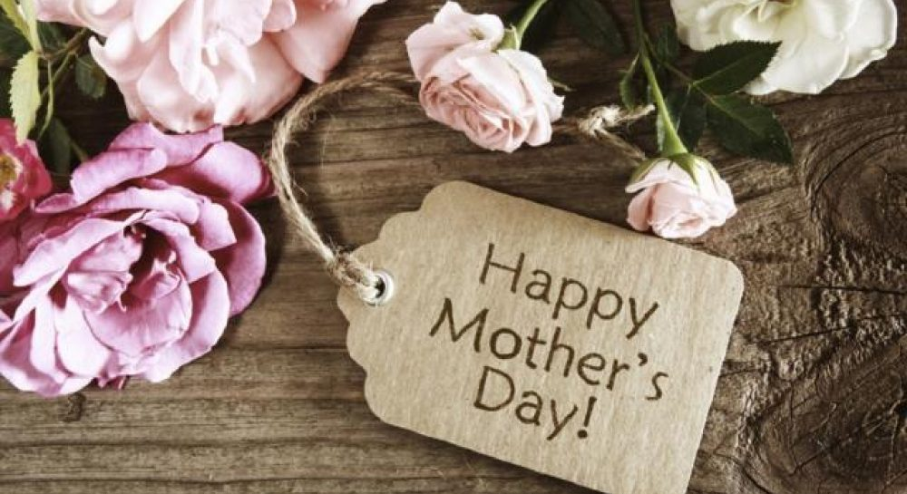
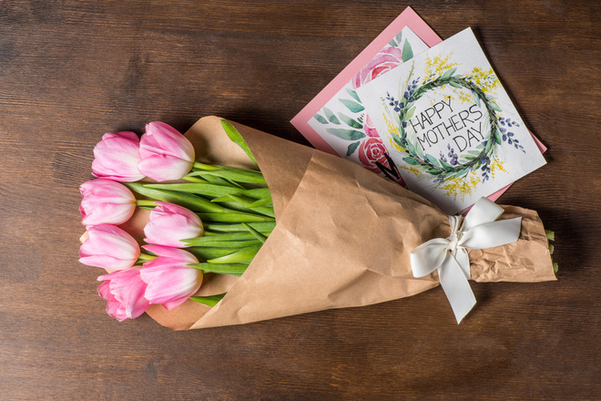

Більше про свято
У житті кожної людини величезну роль відіграє мама - наша підтримка і опора. Для підтримки і шанування всіх мам світу встановлено Міжнародний День матері. У цей день заведено вітати і робити подарунки всім мамам і вагітним жінкам. Це свято відзначається в понад 40 країнах світу, але не має єдиної дати.
Подарунки на свято
Вибір подарунка для мами – просте і водночас складне питання, адже хочеться подарувати щось душевне й незабутнє.День матері є чудовим приводом привітати найдорожчу людину, сказати їй теплі слова й продемонструвати свою любов і турботу. УНІАН зробив добірку різних варіантів подарунків для матерів у їхнє свято. Адже навіть найменша дрібничка, вручена цього дня, потішить жіноче серце та підніме настрій дорогій людині.